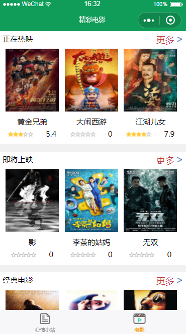
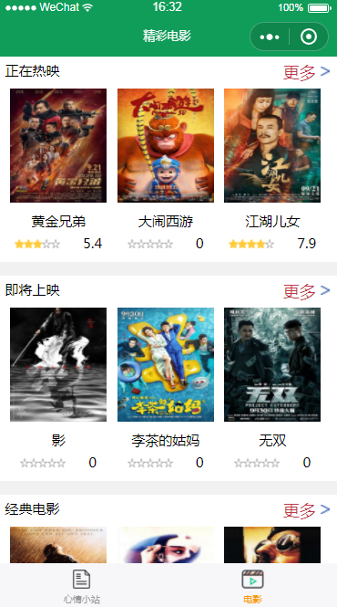
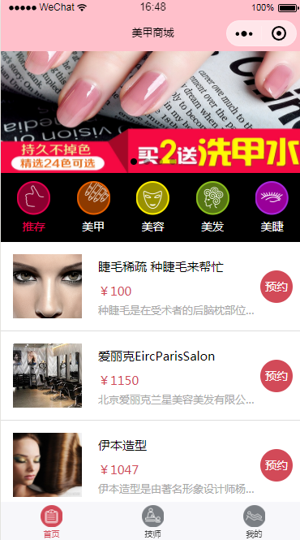
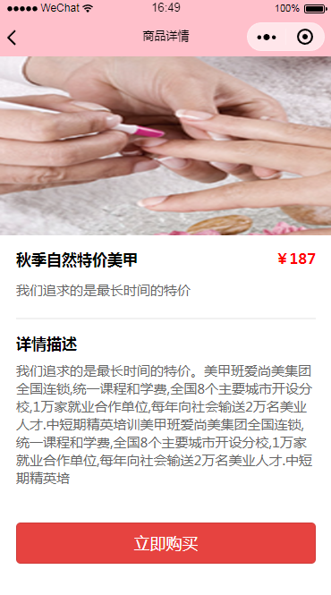

个人作品
-
仿100du电商实战
简介：我的第一个静态页面，用到最基础的html+css和JQuery，PC端布局，所以在移动端体验不佳。主要练习基本功，另外加了一个H5的音频自动播放
链接：https://yteseryh.github.io/HelloWorld/index.html -
仿麦子学院
简介：该页面基于BootStrap搭建,主要为了熟悉BootStrap，另外有用到animate.css和wow.js增加动画效果,用jquery.singlePageNav.js增加锚点平滑效果
链接：https://yteseryh.github.io/maizischool/index.html -
仿麦子学院后台管理系统
简介：该页面基于BootStrap搭建,主要熟悉BootStrap以及更换BootStrap主题，使用Chat.js插件实现折线图效果
链接：https://yteseryh.github.io/maiziBackstage/index.html -
微信小程序之蓝莓派
简介：我的第一个微信小程序，主要学习到了小程序的基本开发，flex布局，template模块化，向用户申请授权，组件之间数据的传递，向豆瓣API接口发起网络请求，本地储存,背景音乐播放。因为审核过不了所以无法上线，主要界面如下图
 

-
微信小程序之美甲商城
简介：picker用法，获取用户信息，组件之间数据的传递,flex布局
  -
我的第一个Vue项目
简介：该页面基于Vue搭建，使用webpack打包，主要学习了Vue的使用方法，了解了webpack的相关配置以及各种插件的用处和用法，页面用到mint-ui，Mui，vue-router，vue-resource，vuex，组件化开发，使用vuex进行组件之间数据和方法的传递。该页面为移动端布局，PC端体验不佳
链接：https://yteseryh.github.io/helloVue/index.html
精彩教程
-
Bootstrap教程
2018-06-10 阅读全文>>Bootstrap 是一个用于快速开发 Web 应用程序和网站的前端框架，Bootstrap 是基于 HTML、CSS、JAVASCRIPT 的。 自 Bootstrap 3 起，框架包含了贯穿于整个库的移动设备优先的样式，所有的主流浏览器都支持 Bootstrap。 Bootstrap 的响应式 CSS 能够自适应于台式机、平板电脑和手机，只要您具备 HTML 和 CSS 的基础知识，您就可以开始学习 Bootstrap。
-
Flex布局教程
2018-06-09 阅读全文>>网页布局（layout）是CSS的一个重点应用，布局的传统解决方案，基于盒状模型， 依赖 display属性+position属性+float属性。它对于那些特殊布局非常不方便，比如，垂直居中就不容易实现。 2009年，W3C提出了一种新的方案----Flex 布局，可以简便、完整、响应式地实现各种页面布局，Flex 布局将成为未来布局的首选方案， 本文介绍它的语法。
-
GitHub教程
2018-06-08 阅读全文>>
gitHub是一个面向开源及私有软件项目的托管平台，因为只支持git 作为唯一的版本库格式进行托管，故名gitHub。 作为开源代码库以及版本控制系统，Github拥有超过900万开发者用户。随着越来越多的应用程序转移到了云上， Github已经成为了管理软件开发以及发现已有代码的首选方法。